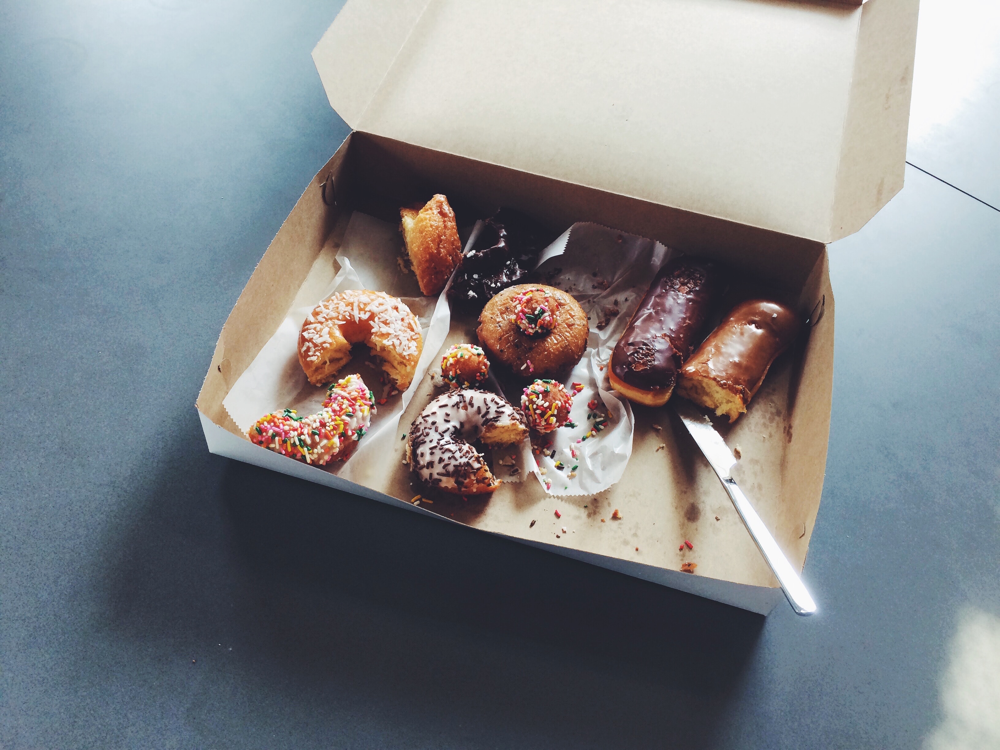

Hunger is a Solvable Problem
The bad news: 1 in 9 Americans experience food insecurity according to USDA estimates. But the good news is, this isn't due to a lack of food but rather an ineffective food redistribution system. In fact, nearly one third of the food supply, or 133 billion pounds of food, goes to waste each year.
We want to change that. Replate's technology seeks to solve the logistical issues that result in millions of hungry Americans by creating an efficient food recovery and redistribution platform. We work with leaders in the food and restaurant space as well as with trustworthy nonprofits to divert food waste away from the landfill and to those in our community who need it most.